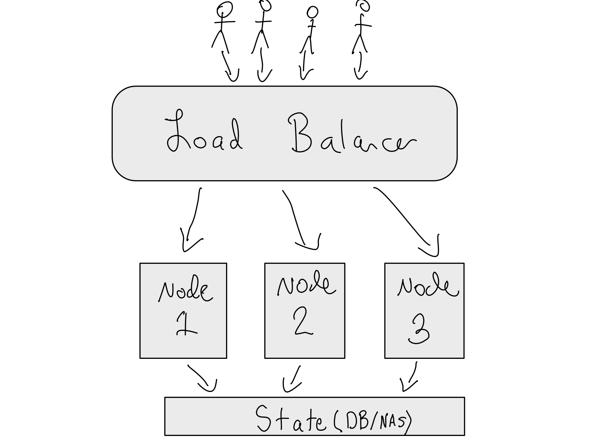

19 Enterprise Server Management
When the number of servers you’re managing is small, you can handle them individually. But for an enterprise, there are dozens or hundreds of servers with complicated interactions across them. In order to keep up with these complexities, different management patterns are needed.
Relative to a world of just a few servers, there are two main issues that come to the fore in an enterprise context – how to manage the complexity of that many servers and how to ensure services are available when they’re needed for enterprise-scale operations.
In this chapter, we’ll get into how enterprises solve these challenges of keeping so many servers in sync and scaling services to be stable and available across an enterprise.
19.1 Managing complexity with Infrastructure as Code
Here’s where you don’t want to be an an enterprise IT/Admin. You stand up a server for the data science team in a known good state – with versions of R and Python and the applications they need. But then, over time, more stuff gets installed. Maybe they needed some more versions of R. And that package they installed required some updated system libraries.
If you just ssh in and do these things — or let the data science team do it themselves, you’ll quickly lose track of what the current state of the server is. You can’t just tear down the server and stand it back up, because none of the changes you’ve made are documented. In DevOps language, the server has become stateful – and that’s a no-no.
Now, when you’ve just got one server like this, it’s annoying, but not the end of the world. If you’re an IT/Admin organization with 40 or 400 servers it is much more troublesome. And moreover, if you have many servers that need to be configured identically – for example because they’re treated as one cluster – this is impossible. In many enterprises, this whole though experiment would just never fly because production servers can’t be changed. They’re validated from top to bottom for compliance or security reasons and then have to be completely re-validated if any changes are needed.
IT/Admin organizations want to avoid server state drift and make sure the environment is always in a known good state. If it ever needs to be torn down or moved, it should be a painless activity to re-create the exact same environment with a minimum of fuss.
There’s a DevOps adage to encompass this need to manage servers as a herd, rather than individually – servers should be cattle, not pets.
To restart an entire server environment from nothing, there are two general steps. Provisioning is about creating and configuring the (virtualized) hardware including the servers and networking configuration. Once the servers are provisioned, they need to be configured including installing things on them and getting them running.
If you’re thinking of restarting an environment from scratch, you need to
- Create the networking environment for servers (VPC)
- Stand up the actual servers and networking facilities
- Configure servers (create users, groups, mount storage, etc)
- Configure networking hardware (ports, firewalls, etc)
- Install system libraries and operating system dependencies
- Install R and/or Python
- Install application layer (RStudio Server, JupyterLab, Shiny Server, etc)
- Configure application layer (write config files)
- Configure application layer networking (SSL, DNS)
- Start application
As an R or Python-loving data scientist, you know that the best way to create this kind of setup is with code. Much like you can use packages like renv and venv to document the state of your R or Python environment and restore it somewhere else (see Chapter 2), IT/Admin professionals use Infrastructure as Code (IaC) tooling to stand up and manage their servers.
It’s not always the case that organizations need to put all of this in code. For example, while servers should be re-create-able in code, it’s quite rare that you need to re-create a VPC, so it may well be the case that step remains manual.
Either way, some names you’ll hear a lot if you’re looking into IaC are Terraform, Ansible, CloudFormation (AWS’s IaC tool), Chef, Puppet, and Pulumi. The other option, which we’ll discuss in more detail below, is using Docker in Kubernetes.
There are also ways to manage enterprise servers that don’t involve IaC. These usually involve writing extensive “run-books” for how to configure servers or point-and-click graphical interfaces for server administration. If your spidey sense is tingling that this probably isn’t nearly as good, you’re right. Enterprise IT/Admin organizations that don’t use IaC tooling is definitely a red flag.
We’re not going to get into any more detail on how these IaC tools work – there are books on all of them you should feel free to read if you’re interested. But now you’ll understand what you’re hearing when the IT/Admin team says they need to write a Terraform script or a Chef recipe to be able to stand up a particular service.
19.1.1 Dev/Test/Prod for IT/Admins
Like you want a Dev/Test/Prod setup for your data science projects as discussed in Chapter 1, IT/Admins usually use a Dev/Test/Prod setup for themselves. They want an environment to test changes before promoting them for testing and eventually into production. In ideal states, even changes in Dev are only attempted with IaC tools to make sure it’s easy to move forward once the changes are final.
In enterprises, upgrades and migrations are major to-dos. Planning for a “lift-and-shift” to the cloud is a multi-year affair in many organizations. Even just upgrading operating systems can be a major undertaking.
For enterprises, I recommend a two-dimensional Dev/Test/Prod setup where the IT/Admin group make changes to the platform in a staging environment.1 Data scientists never get access to the Staging environments and do all their work in the IT/Admin prod environment.
Looking back to Chapter 1, it should be obvious that the best way to move servers and applications from staging to prod is using IaC and CI/CD to make sure that changes to code always make it into production at the right time.
19.2 Enterprise scale and stability
Needing to scale data science environments for large jobs is a common need across large and small organizations. But the enterprise need to support many data scientists often requires a different kind of approach to scaling.
In Chapter 15, we discussed how just making a single server bigger with vertical scaling can take you a long way. But there are limits. For example, I was recently working with a large customer of Posit’s who needed to support up to 2,000 data scientists in their environment.
At that scale, there is no server that is nearly large enough. The way to accomplish this kind of scale isto spread the workload out across many servers with horizontal scaling.
Additionally, when you’re operating at that scale, the stability of the system gets really important. When you’ve got 2,000 data scientists using your platform, each hour of lost time costs more than $100,000.2
For some organizations, this necessitates the creation of a disaster recovery plan. This may mean that there are frequent snapshots of the state of the server (often nightly) so the IT/Admins can just roll back to a previous known good state in the event of a failure. Sometimes it also means that there is actually a copy of the server waiting on standby to be activated at all times.
Other times, there are stiffer requirements such that nodes in the cluster could fail and the users wouldn’t be meaningfully affected. This requirement for limited cluster downtime is often called high availability. High availability is not a description of a particular technology or technical approach – though it is sometimes treated as such. High availability is a description of a desired outcome for a cluster and different organizations have different definitions.
Downtime limits are often measured in nines of uptime. Nines of uptime refers to the proportion of the time that the service is guaranteed to be online out of a year. So a one-nine service is guaranteed to be up 90% of the time, allowing for 36 days of downtime a year. A five-nine service is up for 99.999% of the time, allowing for only about 5 1/4 minutes of downtime a year.
Horizontal scaling and high availability are different of requirements with different implications. Depending on your organization, you may have horizontal scaling requirements or high availability requirements or both.
One option, where you have horizontal scaling requirements, but not high availability is to just put different users or team on their own server. The upside to this is that the team gets ownership of the server. The downside is fragmentation and that the team has to manage your own servers. In organizations that allow this kind of fragmentation, each team is usually on their own to support those servers and you’re basically back in non-enterprise land.
In enterprises, this usually isn’t the way things get done. Most enterprises want to run one centralized service that everyone in the company – or at least across a large group – come to.
If you’re trying to run a large centralized service, it’s going to be run as a load-balanced cluster. In this context, you don’t want to think about individual servers. Instead, you want to manage the cluster as a whole and make it really easy to add individual servers, called nodes.
In order to go from a single server to a cluster, you add two requirements – there needs to be one front door to all the servers, called a load-balancer – and any state users care about needs to move from the individual server to a shared location all of the nodes can access. Usually that state is stored in a database or network attached storage (NAS), which is just a filesystem that lives on its own server.

If you are a solo data scientist reading this – please do not try to run your own data science cluster. When you undertake load balancing, you’ve taken on a distributed systems problem and those are inherently difficult. When done for scaling reasons, it is almost always worthwhile to exhaust the part of vertical scaling where costs grow linearly with compute before undertaking horizontal scaling.
If your organization has high availability requirements, it’s worth considering that just adding more nodes may not be sufficient. As the requirements for high availability get steeper, the engineering cost to make sure the service really is that resilient rise exponentially. In addition to considering what to do if a node goes offline, you also have to have backup for the load-balancer and the database/NAS, as well as any other part of the system.
In fact, it’s totally possible to make your system less stable by just doing horizontal scaling in one spot without thinking through the implications.
19.2.1 Load-balancing requirements
Load-balancers are just a special kind of proxy that routes sessions among the nodes in the cluster. A simple load-balancer just rotates sending traffic to the different nodes using a round-robin configuration.
At a minimum, your load-balancer has to know what nodes are accepting traffic. This is accomplished by configuring a health check/heartbeat endpoint for your product. A health check is a feature of an application. The load-balancer periodically pings the health check. If it gets a response, it knows it can send traffic to that node. If no response comes back, it treats that node as unhealthy and doesn’t send traffic there.
It is sometimes necessary to do more complicated load-balancing that pays attention to how loaded different nodes are. Additionally, some products feature internal load-balancers, so it really doesn’t matter what your load-balancer does.
One other feature that may come up is sticky sessions or sticky cookies. For stateful applications – like Shiny apps – you want to get back to the same node in the cluster so you can resume a previous session. In most load-balancers, this is a simple option you can just turn on.
There are a few different ways to configure load balancing for servers. The first is called active/active. This just means that all of the servers are online all of the time. So if I have two RStudio Server instances, they’re both accepting traffic all the time.
In active/passive configurations, you have two or more servers, with one set accepting traffing all the time, and the other set remaining inert until or unless the first set goes offline. This is sometimes called a blue/green or red/black configuration.
People often really like this configuration if they have high requirements for uptime, and want to be able to do upgrades to the system behind the scenes and then just cut the traffic over at some point without an interruption in service. It is a nice idea. It is often very hard to pull off.
For an application, there are basically two ways it can store data – in a database or in files on the filesystem. Now, this isn’t data you need to access, but it’s needed for the internal workings of the application. For example, it may need to save log information or counts of the number of active users.
When you’re in a single-server configuration, all this can just go somewhere on the server with the application. Very often the database is just a sqlite file that sits in a file on the filesystem.
But when you go to to a load-balanced cluster, all of the nodes need symmetric access to read and write. You need an actual database (like postgres) for the application to use. Additionally, anything on the filesystem now needs to move off of an individual server onto a networked system that all the nodes can access.
19.2.2 Accommodating different kinds of workloads
When you’re doing horizontal-scaling, people often want to accomodate a variety of workloads. For example, they might want to be able to incorporate several different sizes of jobs that might require a few different sized nodes. Or maybe they want to run a mixture of GPU-backed and non-GPU workloads in the cluster and want to reserve GPU nodes for the jobs that need it.
In general, it’s not trivial to set up a single cluster that can support different kinds of workloads, and it’s often easier to set up, for example, a standalone GPU cluster.
These days, people are often reaching for Kubernetes for clusters that need to support varies workloads. While it’s true that Kubernetes can theoretically support different kinds of nodes within one cluster, this often isn’t trivial to configure.
Often, a better option for data science workloads is to use use a high-performance computing (HPC) framework. HPC is particularly appropriate when you need very large machines. In Kubernetes, it is not possible to schedule pods larger than the size of the actual nodes in the cluster. In contrast, most HPC frameworks allow you to combine an arbitrary number of nodes into what acts like a single machine with thousands or tens of thousands of nodes.
For example, Slurm is an HPC framework that support multiple queues for different sets of machines. AWS has a service called ParallelCluster that allows users to easily set up a Slurm cluster – and with no additional cost relative to the cost of the underlying AWS hardware.
19.2.3 Adding Autoscaling
Sometimes people also undertake horizontal scaling to be able to do autoscaling. The idea here is that the organization could maintain a small amount of “always-on” capacity and scale out other capacity as needed to maintain costs. This is possible – but it requires nontrivial engineering work.
In particular, autoscaling a data science workbench down is quite hard. The main reason for this is that many autoscaling routines assume you can easily move someone’s job from one node to another just keeping track of the long-term state. This is a bad assumption for a data science workbench and autoscaling a data science workbench downwards is a difficult challenge.
Let’s think about a relatively stateless workload. For example, let’s imagine a search engine – every time you put in a search, it spins up a job, does your search, and then spins down.
If you come back in a minute or two, it can just spin up another job. It only needs to remember your last query, but that’s a pretty simple bit to state to pass around. If you’re on a different node, no big deal!
That’s not the case with a data science workbench. Many autoscaling frameworks these days assume that applications are mostly stateless. In a stateless applications, every interaction is standalone – there’s very little path dependence. The line between statefulness and statelessness are pretty blurry, but working inside a development environment like RStudio or a Jupyter Notebook is about as stateful as it gets. You have long-term state like the files you need and your preferences and short-term state like the recent commands you’ve typed and the packages loaded into your R and Python environment.
19.3 Docker/Kubernetes in Enterprise
Originally created at Google and released in 2014, Kubernetes is the way to run production services out of Docker containers.3 It is an open source project. If you’re confused by the name, apparently Kubernetes is an ancient Greek word for “helmsman”.
Many organizations are moving towards using Docker and Kubernetes for their server-based infrastructure. Kubernetes solves all three of the key enterprise IT/Admin challenges with running servers because you manage a single cluster, you can scale rather effortlessly, and app-level administration is extremely simple.
The elegance of using Kubernetes is that it completely separates provisioning and configuration challenges. The main unit of analysis in Kubernetes is a pod, which is the term for a Docker container that is running in Kubernetes.
The elegance of Kubernetes is that you create a cluster of a certain number of nodes and separately request a certian number of pods with a certain amount of horsepower. Kubernetes takes care of scheduling the pods on the nodes.
TODO: Graphic of Kubernetes
This is amazing, because unlike running services on a regular VM, you just make sure you’ve got enough horsepower in the cluster and then all the app-level requirements go in the container. Then when you declare how many pods you want, you don’t have to worry about what’s going on with each of the nodes in the cluster because it is just running Kubernetes and Docker.
This really is extremely powerful – it’s pretty easy to tell Kubernetes, “I want one instance of my load balancer container connected to three instances of my Workbench container with the same storage volume connected to all three.”
In practice, unless you’re part of a very sophisticated IT organization, you’ll almost certainly use Kubernetes via one of the cloud providers’ Kubernetes clusters as a service. AWS’s is called Elastic Kubernetes Service (EKS).4
One really nice thing about using these Kubernetes clusters as a service is that adding more compute power to your cluster is generally as easy as a few button clicks. On the other hand, that also makes it dangerous from a cost perspective.
It is possible to define a Kubernetes cluster “on the fly” and deploy things to a cluster in an ad hoc way. But then you’re back out of IaC world. You can use any standard IaC tooling to stand up a Kubernetes cluster in any of the three major clouds. Once you’ve got the cluster up, Helm is the standard tool for defining what’s running in the cluster.
There’s a reason Kubernetes is taking the world by storm – it makes managing complicated enterprise workloads way easier. For example, let’s say you want to stand up a new service in a Kubernetes cluster using IaC. I listed 10 steps above for doing this in a standard server-based configuration. For Kubernetes, there are only three steps:
- Provision the cluster itself using IaC or add nodes to an existing cluster (usually trivially easy)
- Get the Docker containers to run in the cluster (often provided by vendors)
- Declare what container configuration you want in the environment using Helm
One really nice thing about this is that it’s really clear where the state lies. The applications themselves are installed in the Docker containers and because the containers themselves are ephemeral, state has to be mounted in from somewhere external.
Relative to more stateful server-based configuration, Kubernetes-based configurations rest a lot more heavily on environment variables, so a lot of configuring application setup is the same as configuring the environment variables in the running container.
In the extreme version, some enterprises are going to “we just run a single kubernetes cluster for our entire organzation”. In my opinion, this will someday be a great pattern, but it’s still a little immature. In particular, Kubernetes kinda makes the underlying assumption that all of the resources for the cluster are shared across the cluster. There are ways to use namespaces and other things – but not all Kubernetes resources can be split into namespaces, and managing a Kubernetes cluster for multiple use cases or groups isn’t at all trivial.
It’s easy to look at the power of Kubernetes and think it will make everything easy. This is not the case. While the high-level outlines of Kubernetes are super appealing, it is still a complex tool and a data science workbench is a particularly difficult fit for Kubernetes.
In many organizations, adopting Kubernetes is synonymous with trying to do autoscaling. As previously discussed, autoscaling a data science workbench is a particularly difficult task – and Kubernetes is particularly friendly to stateless workloads. Autoscaling in Kubernetes with a data science workbench really requires a highly competent Kubernetes admin.
Networking in Kubernetes can also be quite complicated. For anything that lives fully in Kubernetes, like your Workbench nodes and load-balancer, it’s quite simple. But getting things into and out of the Kubernetes cluster – like the filesystem you probably need to mount in and accessing databases is a real challenge.
All this to say – these are solvable problems for an experienced Kubernetes admin. But they will probably need some guidance around specific requirements for a data science workbench.
19.4 Comprehension Questions
- What is the difference between horizontal and vertical scaling? For each of the following examples, which one would be more appropriate?
You’re the only person using your data science workbench and run out of RAM because you’re working with very large data sets in memory.
Your company doubles the size of the team that will be working in your data science workbench. Each person will be working with reasonably small data, but there’s going to be a lot more of them.
You have a big modeling project that’s too large for your existing machine. The modeling you’re doing is highly parallelizable.
- What is the role of the load balancer in horizontal scaling? When do you really need a load balancer and when can you go without?
- What are the biggest strengths of Kubernetes as a scaling tool? What are some drawbacks?
I call it staging because I call the data science environments Dev/Test/Prod. You’ll have to work out language with your IT/Admin group.↩︎
A low-end estimate of $100,000 fully-loaded cost for one data scientist FTE and 2,000 hours is $50 per hour.↩︎
If you are pedantic, there are other tools for deploying Docker containers like Docker Swarm and Kubernetes is not limited to Docker containers. But those are corner cases.↩︎
If you aren’t using EKS, Azures AKS, or Google’s GKE, the main other competitor is Oracle’s OpenShift, which some organizations have running in on-prem Kubernetes clusters.↩︎